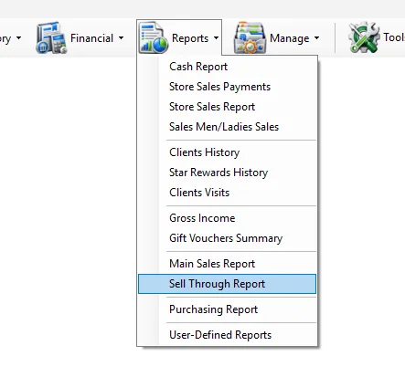
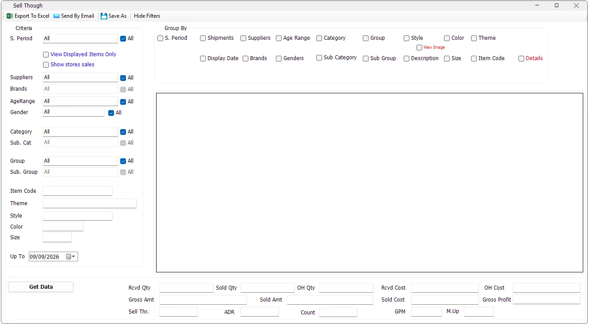

Buying
Which styles are selling through fastest?
Group by Style and Color and compare Sell Thr., Sold Qty and OH Qty.
Sell Through is the merchandise-performance report in IMS. It brings receipts, net sales, stock adjustments, depreciation and on-hand stock together so users can see how much merchandise was received, how much sold, what remains, how quickly it sold and the related margin and cost figures.

While the report is running, Get Data changes to Cancel. Click Cancel if you need to stop a long-running report.

Some IMS criteria fields open a compact multi-selection list instead of a normal drop-down. You can select several values without holding Ctrl.
| Field display | Meaning |
|---|---|
| All | All available values are included. If no individual item remains selected, IMS automatically returns the field to All. |
| One name | Exactly one value is selected. |
| Multi Selected | Two or more values are selected. |
| Criteria | What it does |
|---|---|
| S. Period | Filters by IMS statistical/selling period. Multiple periods can be selected. |
| Suppliers | Filters merchandise by one or more suppliers. |
| Brands | Filters by brand. Brand selection becomes available when the supplier selection allows IMS to determine the applicable brand list. |
| AgeRange | Filters merchandise by age range. |
| Gender | Filters merchandise by gender classification. |
| Category / Sub. Cat | Filters the main merchandise category and subcategory. |
| Group / Sub. Group | Filters the merchandise group and subgroup. |
| Item Code | Exact item-code filter. |
| Theme | Text search for Theme. |
| Style | Text search; matching styles containing the entered value are included. |
| Color | Text search against the item color code. |
| Size | Exact size filter. |
| Up To | Calculates receipts, sales and stock position up to the selected date. |
Some lists depend on another selection. For example, Brand is loaded for a single selected supplier; Category/Sub Category and Group/Sub Group also refresh their available values as the parent selection changes.
Select View Displayed Items Only to include only merchandise that has a recorded First Display Date. This is useful when the analysis should exclude received merchandise that has not yet been displayed for sale.
Show stores sales adds store-specific sold-quantity columns to the result. Use it when you want the same merchandise grouping accompanied by the quantity sold at each participating store.
Group By controls the descriptive columns that define each report row. Multiple grouping options can be combined.
| Group By | Result |
|---|---|
| S. Period | Separates the result by statistical/selling period. |
| Shipments | Adds the most recent receipt date and shipment and separates rows by shipment. |
| Suppliers | Separates rows by supplier when more than one supplier is in the selected criteria. |
| Display Date | Adds First Display and the number of weeks since the first display date. |
| Brands | Separates rows by brand when multiple brands are available. |
| Age Range | Separates rows by age range. |
| Genders | Separates rows by gender. |
| Category / Sub Category | Separates rows by merchandise category hierarchy. |
| Group / Sub Group | Separates rows by merchandise group hierarchy. |
| Style | Separates rows by style. |
| Color | Adds Color Code and Color Name and separates rows by color. |
| Theme | Separates rows by Theme. |
| Description | Separates rows by supplier/product description. |
| Size | Separates rows by size. |
| Item Code | Produces item-code-level analysis. |
| Details | Adds detailed purchasing, pricing and full-price/discounted sales columns. |
Select Details when a standard sell-through row is not enough. IMS adds purchasing and pricing information including purchase currency, average purchase price, average original price, average current price, current discount, last sales transaction date and the Full/Discounted quantity, amount and cost breakdowns.
View Image loads item thumbnails into the report after data has been generated. The generated report must contain both Style and Color Code, because IMS builds the image lookup from those two values.
For reports above 10,000 rows, IMS asks for confirmation before loading images. Excel export can include the loaded images; for more than 5,000 rows IMS asks whether to export with images, export data only, or cancel.
| Column / KPI | Meaning in IMS |
|---|---|
| Rcvd Qty | Net received quantity up to the selected date. Purchase returns reduce received quantity. |
| Rcvd Cost | Net received inventory cost. |
| Sold Qty | Net sales quantity. Sales returns reduce sold quantity. |
| Sold Amt | Net sales amount. |
| Sold Cost | Cost associated with the net sold quantity. |
| Gross Amt | Gross sales value before discounts, net of returns. |
| ADR | 1 − (Sold Amt ÷ Gross Amt). |
| Sell Thr. / S_Thr | Sold Qty ÷ Rcvd Qty. |
| SalesMix | The row's Sold Amt as a percentage of total Sold Amt for the selected report. |
| Adj Qty / Adj Cost | Stock adjustment quantity and cost included in the on-hand calculation. |
| Dprc Qty / Dprc Cost | Depreciation quantity and cost deducted from on-hand stock. |
| OH Qty | Rcvd Qty − Sold Qty + Adj Qty − Dprc Qty. |
| OH Cost | Rcvd Cost − Sold Cost + Adj Cost − Dprc Cost. |
| M.Up | Sold Amt ÷ Sold Cost. |
| Gross Profit | Sold Amt − Sold Cost. |
| GPM | Gross Profit ÷ Sold Amt. |
For historical reconstruction, purchase code 1 increases received quantity/cost and purchase-return code 2 reduces it. Sales returns using transaction codes 53 and 54 are treated as negative sales quantities and amounts, so Sell Through is based on net movement rather than gross sales alone.
The summary area totals the displayed rows and shows Rcvd Qty, Sold Qty, OH Qty, Rcvd Cost, Sold Cost, OH Cost, Gross Amt, Sold Amt, Gross Profit, Sell Thr., ADR, Count, GPM and M.Up.
Count is the number of generated report rows. Sell Through, ADR, GPM and M.Up are recalculated from the overall totals rather than averaged from the individual row percentages.
For the most recent period, IMS reads the prepared Sell Through dataset. For an older Up To date, IMS reconstructs the position from receipt, sales, adjustment and depreciation history. Because this is more work, IMS warns:
| Action | Behavior |
|---|---|
| Export To Excel | Exports the generated grid. Loaded product images can also be included. |
| Send By Email | Sends the Sell Through report with a subject based on the selected Up To date. |
| Save As | Saves the generated report. IMS requires report data before this command can be used. |
| Hide Filters | Hides both the Criteria and Group By panels and expands the report grid; use Show Filters to restore them. |
Report output and financial information follow the logged-in user's IMS permissions. Export To Excel and Send By Email can be hidden independently. COGS/cost columns, Markup, Gross Profit and GPM are also hidden when the user's policy does not allow those values.
Group by Style and Color and compare Sell Thr., Sold Qty and OH Qty.
Group by Shipments and review Rcvd Qty, Sold Qty and OH Qty.
Select Display Date to add First Display and Weeks.
Select Style/Color grouping and enable Show stores sales to add store-level sold quantities.
Sell Through uses the Supplier and Brand definitions maintained in Manage → Suppliers. Each brand belongs to a supplier, which is why Brand selection and grouping follow the selected supplier criteria.
Sell Through's merchandise criteria and grouping fields are based on Manage → Items: Style, Color, Size, Theme, Description, Item Code, Category/Sub Category, Product Group/Sub Group, Supplier/Brand, Age Range, Gender and period classifications.
The View Image option uses the Style/Color image maintained in the Item master. All Size variants of the same Style and Color use that shared image.
The report's merchandise classifications come from the same masters used by Manage → Items:
| Report field | IMS master |
|---|---|
| Category / Sub Category | Manage → Categories |
| Group / Sub Group | Manage → Product Groups |
| Age Range | Manage → Age Ranges |
| Gender | Manage → Genders |
| S. Period | Manage → Statistical Periods |